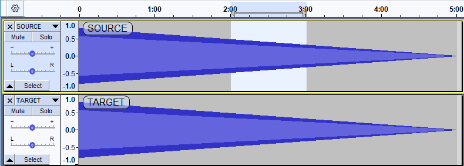
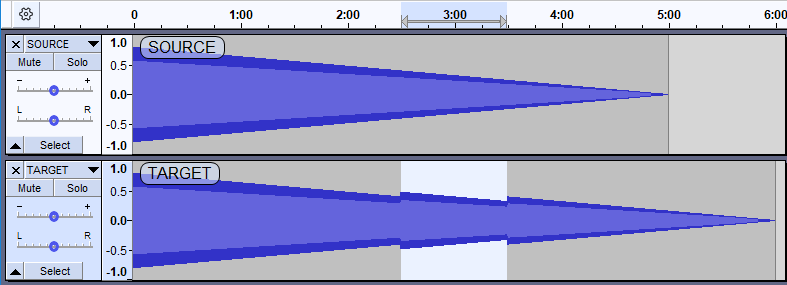
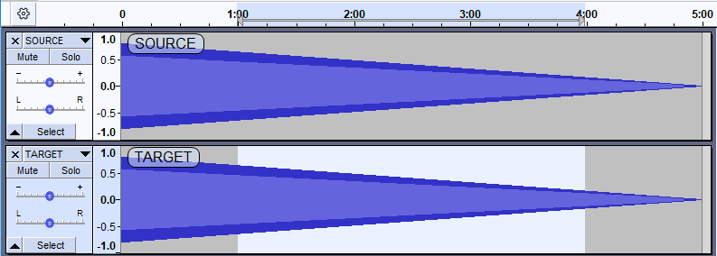
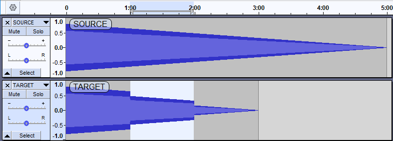
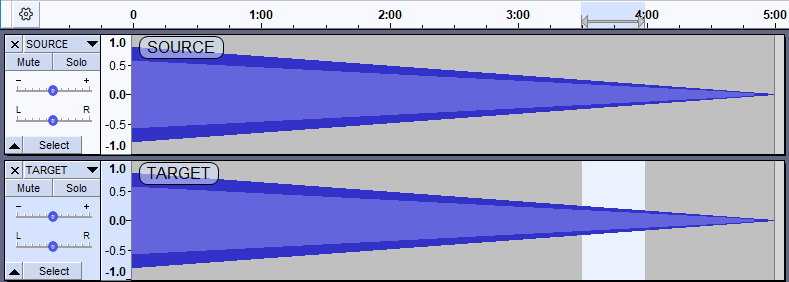
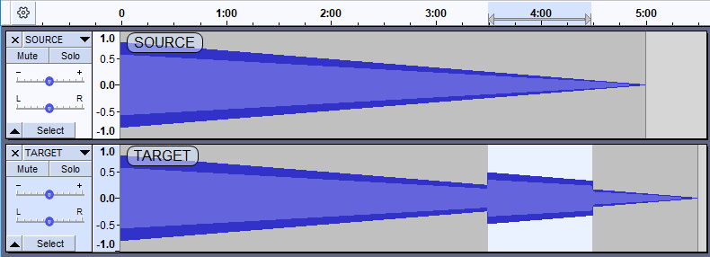
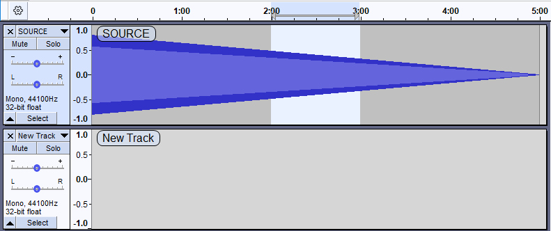
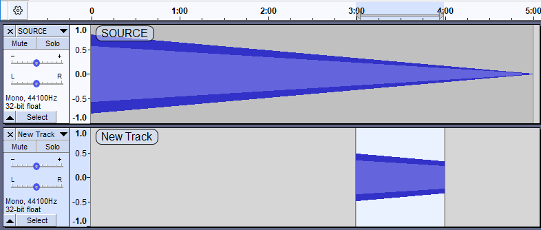
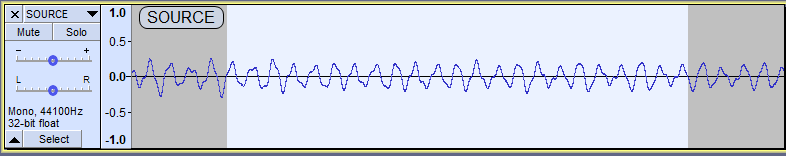

Copy and Paste a section of audio
- In these examples the track with the "good" section is the "Source" track and the track with the "bad" section is the "Target" track.
- The examples mostly use an un-lifelike sine tone chirp to make it visually clearer as to what is happening.
Contents
- Select the required audio
- Pasting into an existing TARGET track
- Pasting into a new track
- To avoid clicks try to start and stop your selection at zero
Select the required audio
Use the Selection Tool  to select a section of audio from the source track with click-and-drag (the source and target tracks are labeled SOURCE and TARGET in the examples.)
to select a section of audio from the source track with click-and-drag (the source and target tracks are labeled SOURCE and TARGET in the examples.)
- 
- For our examples we make a 1 minute selection in the SOURCE track from 2 minutes to 3 minutes
To make sure your selection includes exactly the section of audio you want, you can use the zoom tools under the View menu, or the Zoom tools in the Edit Toolbar to zoom in to the beginning and end of your selection and select the exact samples you want.
See this section for advice on how to prevent "popping" sounds in your final audio track.
Make the copy
Copy the selected audio to the Audacity clipboard by clicking on or press the shortcut Ctrl + C or ⌘ + C on Mac).
Pasting into an existing TARGET track
Apply the paste
To make the paste select from the Edit Menu or press the shortcut Ctrl + V or (⌘ +V on Mac).
Restrictions
|
| Note that the TARGET track can be the same track as the SOURCE track - that is, it is possible to cut and paste within the same track. |
Pasting into a point selection
If you make a point selection in the TARGET track at 2m 30s and paste the above 1 minute selection, the pasted section will start at 2m 30sand will push the existing audio rightwards lengthen the track by 1 minute to now be 6 minutes long.
- 
- Pasted 1 minute selection starts at 2m 30s and extends the TARGET track by 1 minute to be 6 minutes long
Pasting into a longer selection
If you paste over a selection that is longer that the one on the clipboard this will overwrite the longer selection and shorten the track.
- 
- Selecting 3 minutes from 1 minute to 4 minutes to paste over
- 
- After the paste the TARGET track is shortened to 3 minutes
Pasting into a shorter selection
If you paste over a selection that is shorter than the one on the clipboard this will overwrite the shorter selection and lengthen the track,pushing the audio to the right of the selection rightwards.
- 
- Selecting 30 seconds from 3:30 to 4 minutes to paste over
- 
- After the paste the TARGET track is lengthened to 5 minutes 30 seconds
If you need to paste into a target track at precisely the same size and position in the source track, you can:
On Mac use ⌘ in place of Ctrl. |
Pasting into a new track
If you want to paste into a new track at a specific start time you must first create the new track, then select the start time in that track and then make the paste.
- 
- Selecting in the source track after having added the new track
- 
- After clicking at T=3 minutes in the New Track and then making the paste
If you want to create a new track and paste into that, the paste will automatically create a new mono or stereo track as appropriate, with the audio starting at time zero, if you:
|
To avoid clicks try to start and stop your selection at zero
In order to avoid clicks/pops at the joins of your paste, try to select a section of audio that starts and ends at the 0.0 line in the Vertical Scale - both for the SOURCE and the TARGET selections.
- 
- Selection starting ad stopping at 0
This is a very short, zoomed-in, example so in order to achieve this in real life (with longer selections) you may need to use zooming and add labels to mark the start and end of your selection.
For mono tracks you can also try once you have made your rough selection.At Zero Crossings seldom works well with stereo tracks as the two channels seldom reach zero at the same time.